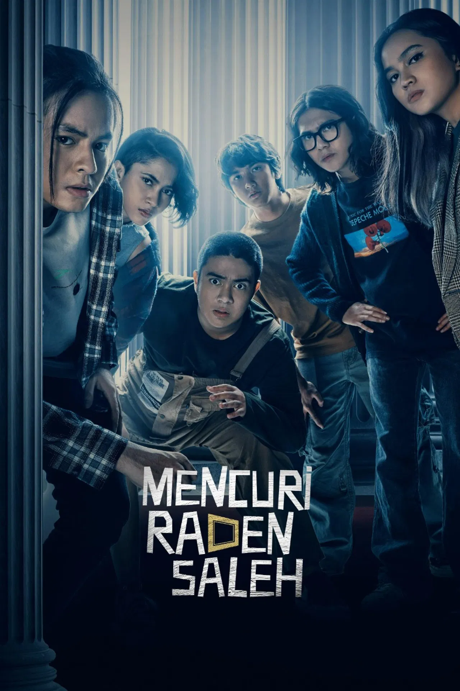

Mencuri Raden Saleh
-
Deskripsi Singkat: Film heist (perampokan) karya sineas Indonesia tentang sekelompok mahasiswa yang merencanakan pencurian lukisan bernilai sejarah.
-
Aktor Pemeran Utama: Iqbaal Ramadhan, Angga Yunanda, Rachel Amanda, Umay Shahab, Aghniny Haque, Ari Irham
-
Pengarang Cerita: Angga Dwimas Sasongko & Husein M. Atmodjo
Sutradara: Angga Dwimas Sasongko
-
Rating:
-
Sinopsis: Piko, seorang mahasiswa seni yang ahli memalsukan lukisan, sangat membutuhkan uang untuk membebaskan ayahnya dari penjara. Ia mendapat tawaran misterius untuk mencuri lukisan legendaris "Penangkapan Pangeran Diponegoro" karya Raden Saleh langsung dari Istana Negara. Piko kemudian merekrut tim yang terdiri dari teman-teman remajanya yang ahli di bidang masing-masing (seperti peretas, mekanik, hingga pembalap) untuk melakukan misi pencurian yang sangat mustahil tersebut.